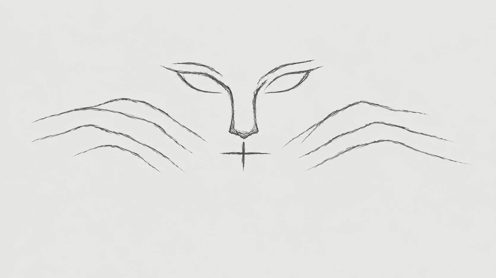

Story
가상 증언을 따라가기
마을 사람들이 들려주는 소문을 따라 두 사자를 찾아가는 여정
02 · CURATION
잘 알려지지 않은 석사자에
관심을 갖고 가까이 다가가는 방법
Story에서 들은 가상 증언은 두 사자의 모습에 대한 궁금증으로 이어진다. Index에서는 그 이야기 속 특징을 실제 3D 스캔에서 찾아볼 수 있다.

웹에서는 장소에 구애받지 않고 이야기를 따라갈 수 있다. 원하는 장면에서 멈추고 유물을 돌려 보며, 각자의 속도로 살펴보도록 했다.
Story
마을 사람들이 들려주는 소문을 따라 두 사자를 찾아가는 여정
Index
과거로부터 전해진 두 석사자를 돌리고 확대하며 문양과 흔적을 살피는 경험